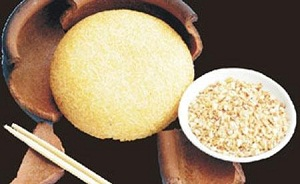

Cùng bắt tay làm thử thôi nào!
Hướng dẫn cách nấu cơm niêu ngon và chi tiết nhất
Nguyên liệu:
100g gạo dẻo Thái, 20g dừa nạo, 50ml nước cốt dừa, một muỗng cà phê muối, một muỗng cà phê đường, một ít lá dứa, một cái niêu đất.
Nguyên liệu cho xốt cà ri: 100ml nước dùng rau củ, 1/2 muỗng cà phê bột cà ri, hạt nêm chay vừa đủ, 50ml nước cốt dừa.
Thực hiện:
Gạo vo sạch, để ráo, rưới nước cốt dừa, cho muối, đường vào trộn đều, cho vào xửng hấp, thêm lá dứa cho thơm. Khi hấp, thỉnh thoảng mở bung nắp, xới cho cơm tơi, xốp và đảm bảo chín đều là được.
Cơm dừa nạo xay nhuyễn, cho vào chảo nóng rang đến vàng, thơm.
Làm xốt: Bắc nồi nước dùng rau củ lên bếp, cho bột cà ri vào, nấu sôi, nêm muối, đường, hạt nêm vừa ăn. Dừa vắt lấy nước cốt, cho vào xốt, đun sôi lại, để lửa riu riu đến khi xốt sánh, nhắc xuống.
Cho cơm ra niêu đất để giữ nóng, rắc dừa lên mặt, ăn với xốt cà ri.